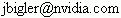

FindCUDA.cmake
For more information about CMake and Cuda:
There are basically 3 versions of the script.
See below for details.
NOTE: The source code is hosted at a new svn server (but the old
code.sci.utah.edu server name should alias to the new one) : https://gforge.sci.utah.edu/svn/findcuda/trunk
This web page contains information about an unofficial version of
the FindCuda.cmake script developed to compile CUDA
programs. Many individuals have adopted
the script and suggested improvements, and tested the script on various
platforms and configurations. We appreciate all of the feedback and bug fixes
we have received since the initial release.
This webpage is updated infrequently- the svn log contains details
about bug fixes and updates.
Please send any comments or questions by email. If you use the
NVIDIA forums, we might not see you question for some time.
James Bigler

NVIDIA Research
Abe Stephens
Scientific Computing and Imaging Institute, University of Utah.
Features
- Works on all CUDA platforms, tested with CUDA 2.2.
- Will generate visual studio project files.
- Parses an nvcc generated dependency file into CMake format.
Targets will be regenerated when dependencies change.
- Displays kernel register usage during compilation.
- Support for compilation to executable, shared libary, or PTX.
Source Code:
Trunk
Again many changes have come been implemented. Some of the changes have been
done in preparation of the code moving into the CMake distribution. The trunk
is in a state of flux, but should work barring any unknown bugs.
It is necessary to make several
changes to a project's CMakeLists.txt files in order to use the new
version.
Get the code
svn co https://gforge.sci.utah.edu/svn/findcuda/trunk FindCUDA
Changes
- Variable name changes
- CUDA_NVCC -> CUDA_NVCC_EXECUTABLE
- CUDA_INSTALL_PREFIX -> CUDA_TOOLKIT_ROOT_DIR
- CUFFT_LIBRARIES -> CUDA_CUFFT_LIBRARIES
- CUBLAS_LIBRARIES -> CUDA_CUBLAS_LIBRARIES
- FOUND_CUDA_NVCC_INCLUDE -> CUDA_TOOLKIT_INCLUDE
- FOUND_CUDART -> CUDA_CUDART_LIBRARY
- FOUND_CUDA -> CUDA_CUDA_LIBRARY
- CUDA_SDK_INSTALL_PREFIX -> CUDA_SDK_ROOT_DIR
- FOUND_CUT_INCLUDE -> CUDA_CUT_INCLUDE_DIR
- CUDA_CUT_INCLUDE_DIRS -> CUDA_CUT_INCLUDE_DIR
- FOUND_CUT -> CUDA_CUT_LIBRARY
- CUDA_CUT_LIBRARIES -> CUDA_CUT_LIBRARY
- FOUND_cufftemu -> CUDA_cufftemu_LIBRARY
- FOUND_cublasemu -> CUDA_cublasemu_LIBRARY
- FOUND_cufft -> CUDA_cufft_LIBRARY
- FOUND_cublas -> CUDA_cublas_LIBRARY
- API Changes
- The script now supports checking of the CUDA version using the standard
found in find_package().
- CUDA_COMPILE_PTX removes the second argument that held the list
of source files to match CUDA_COMPILE.
- If you were using it before CUDA_add_custom_commands has been
renamed to CUDA_WRAP_SRCS and its API has changed. See docs in
FindCUDA.cmake. This function is now blessed to be used outside of the
script.
- You can now specify extra options to pass into nvcc with the OPTIONS
flag to CUDA_ADD_EXECUTABLE, CUDA_ADD_LIBRARY,
CUDA_COMPILE, CUDA_COMPILE_PTX, and
CUDA_WRAP_SRCS.
- include_directories(${CUDA_INCLUDE_DIRS}) is now called for you in
CUDA_ADD_EXECUTABLE and CUDA_ADD_LIBRARY.
- Changed CUDA_BUILD_CUBIN default to OFF.
- Object files are now generated instead of C files. This will generate
different code for different build types.
- Compiler definitions (via add_definitions()) are automatically
added to the host code compilation.
- CMAKE_C_FLAGS and friends are also automatically added to the host code
compilation.
- Minimum CMake version 2.6.2 is required.
- Build rules are now attached to the source files by
default. CUDA_ATTACH_VS_BUILD_RULE_TO_CUDA_FILE was off by default
in the last version. If you want to add the same cuda file to more that one
target, you should turn this off.
- CUDA_GENERATED_OUTPUT_DIR can now be specified. If not
specified (i.e. it is blank), then the CMAKE_CURRENT_BINARY_DIR is
used.
- If you want to build a shared library then you should specify this via the
CMake variable BUILD_SHARED_LIBS.
2.0
We released a major revision to the script in December 2008 at
approximately the same time as the CUDA 2.1 beta. There are many
differences in the new version of the script and it has been tested
extensively on Linux, Mac, and WinXP/Vista.
It is necessary to make several
changes to a project's CMakeLists.txt files in order to use the new
version.
The code is available in an svn repository:
svn co https://gforge.sci.utah.edu/svn/findcuda/tags/2.0 FindCUDA
List of partial changes
- The capitalization of the script's filename is changed to
FindCUDA.cmake.
- The script may be included using FIND_PACKAGE (see example code).
- Switched to standard CMake package variable names: (e.g. CUDA_INCLUDE_DIRS instead of
CUDA_INCLUDE, CUDA_LIBRARIES
instead of CUDA_TARGET_LINK).
- Selection of Device or Release mode via boolean option CUDA_BUILD_EMULATION instead
of a text string.
- Paths added to INCLUDE_DIRECTORIES are passed to nvcc.
- Added option to host compilation mode boolean option.
- Added CUDA_COMPILE_PTX macro for compilation to .ptx.
- Added a macro generated target to clean all generated
dependencies.
- Locates the cuFFT and cuBLAS libraries as well (both in Device
and Emulation mode).
Major bug fixes
- Fixed problem in Emulation mode which caused targets to
continuously be rebuilt.
- Fixed problems associated with incomplete compilation in visual
studio.
- Updated default paths for toolkit and SDK on several platforms.
Notes:
- Set the cmake cache variable CUDA_BUILD_CUBIN
to enable or disable generation and parsing of .cubin files for kernels
in Device mode. When enabled the number of registers, memory usage,
etc. will be printed to the console for each kernel. This information
can be entered in the Cuda
occupancy calculator.
- The script will output the actual command lines used in verbose
mode (e.g. make VERBOSE=1).
- The example code is intended to demonstrate cmake script usage
only, the .cu files don't do anything illustrative.
1.0
You can get the original version of the script by doing
svn co https://code.sci.utah.edu/svn/findcuda/tags/1.0 FindCUDA
Usage:
The script will search for your cuda toolkit and SDK installation using
several standard paths and the
environment variables which are created by the installer.
The following example includes the script and shows how to add code in
an executable. The CUDA_ADD_* commands have the same
semantics as the standard ADD_* commands.
SET(CMAKE_MODULE_PATH "${CMAKE_SOURCE_DIR}/CMake/cuda" ${CMAKE_MODULE_PATH})
FIND_PACKAGE(CUDA)
CUDA_ADD_EXECUTABLE(test
test_bin.cu
main.cc
)
See additional usage in the example project.
License
For more information, please see: http://software.sci.utah.edu
The MIT License
Copyright (c) 2008-2009
NVIDIA Corp.
Copyright (c) 2007-2009
Scientific Computing and Imaging Institute, University of Utah
License for the specific language governing rights and limitations under
Permission is hereby granted, free of charge, to any person obtaining a
copy of this software and associated documentation files (the "Software"),
to deal in the Software without restriction, including without limitation
the rights to use, copy, modify, merge, publish, distribute, sublicense,
and/or sell copies of the Software, and to permit persons to whom the
Software is furnished to do so, subject to the following conditions:
The above copyright notice and this permission notice shall be included
in all copies or substantial portions of the Software.
THE SOFTWARE IS PROVIDED "AS IS", WITHOUT WARRANTY OF ANY KIND, EXPRESS
OR IMPLIED, INCLUDING BUT NOT LIMITED TO THE WARRANTIES OF MERCHANTABILITY,
FITNESS FOR A PARTICULAR PURPOSE AND NONINFRINGEMENT. IN NO EVENT SHALL
THE AUTHORS OR COPYRIGHT HOLDERS BE LIABLE FOR ANY CLAIM, DAMAGES OR OTHER
LIABILITY, WHETHER IN AN ACTION OF CONTRACT, TORT OR OTHERWISE, ARISING
FROM, OUT OF OR IN CONNECTION WITH THE SOFTWARE OR THE USE OR OTHER
DEALINGS IN THE SOFTWARE.